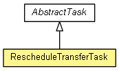

org.waarp.openr66.context.task
Class RescheduleTransferTask
java.lang.Object
 org.waarp.openr66.context.task.AbstractTask
org.waarp.openr66.context.task.RescheduleTransferTask
org.waarp.openr66.context.task.AbstractTask
org.waarp.openr66.context.task.RescheduleTransferTask
- All Implemented Interfaces:
- Runnable
public class RescheduleTransferTask
- extends AbstractTask

Reschedule Transfer task to a time delayed by the specified number of milliseconds, if the error
code is one of the specified codes and the optional intervals of date are compatible with the new
time schedule
Result of arguments will be as following options (the two first are mandatory):
"-delay ms" where ms is the added number of ms on current time before retry on schedule
"-case errorCode,errorCode,..." where errorCode is one of the following error of the current
transfer (either literal or code in 1 character:
ConnectionImpossible(C), ServerOverloaded(l), BadAuthent(A), ExternalOp(E), TransferError(T),
MD5Error(M), Disconnection(D), RemoteShutdown(r), FinalOp(F), Unimplemented(U), Shutdown(S),
RemoteError(R), Internal(I), StoppedTransfer(H), CanceledTransfer(K), Warning(W), Unknown(-),
QueryAlreadyFinished(Q), QueryStillRunning(s), NotKnownHost(N), QueryRemotelyUnknown(u),
FileNotFound(f), CommandNotFound(c), PassThroughMode(p)
"-between start;end" and/or "-notbetween start;end" (multiple times are allowed, start or end can
be not set) and where start and stop are in the following format:
Yn:Mn:Dn:Hn:mn:Sn where n is a number for each time specification, each specification is
optional, as Y=Year, M=Month, D=Day, H=Hour, m=minute, s=second.
Format can be X+n, X-n, X=n or Xn where X+-n means adding/subtracting n to current date value,
while X=n or Xn means setting exact value
If one time specification is not set, it is based on the current date.
"-count limit" will be the limit of retry. The value limit is taken from the "info on transfer" and not from the rule
as "#CPTLIMIT#newlimit#CPTLIMIT#". Each time this function is called, the
limit value will be replaced as newlimit = limit - 1 in the "info of transfer" as "#CPTLIMIT#newlimit#CPTLIMIT#".
To ensure correctness, the value must be in the "info of transfer" since this value will be
changed statically in the "info of transfer". If taken from the rule, it will be wrong since
the value will never decrease. However, a value must be setup in the rule in order to reset the value
when the count reach 0.
So in the rule, "-count resetlimit" must be present, where resetlimit will be
the new value set when the limit reach 0, and in the "info on transfer",
"#CPTLIMIT#limit#CPTLIMIT#" must be present. If one is missing, the condition is not applied.
If "-notbetween" is specified, the planned date must not be in the area.
If "-between" is specified, the planned date must be found in any such specified areas (could be
in any of the occurrence). If not specified, it only depends on "-notbetween".
If none is specified, the planned date is always valid.
Note that if a previous called to a reschedule was done for this attempt and was successful, the
following calls will be ignored.
Important note: any subsequent task will be ignored and not executed once the reschedule is accepted.
In case start > end, end will be +1 day
In case start and end < current planned date, both will have +1 day.
Example: -delay 3600000 -case ConnectionImpossible,ServerOverloaded,Shutdown -notbetween
H7:m0:S0;H19:m0:S0 -notbetween H1:m0:S0;H=3:m0:S0
means retry in case of error during initialization of connection in 1 hour if not between 7AM to
7PM and not between 1AM to 3AM.
- Author:
- Frederic Bregier
| Fields inherited from class org.waarp.openr66.context.task.AbstractTask |
ARCHPATH, BLOCKSIZE, CPTLIMIT, DATE, ERRORCODE, ERRORMSG, ERRORSTRCODE, FILESIZE, FULLTRANSFERID, HOMEPATH, HOUR, INPATH, LOCALEXEC, LOCALHOST, LOCALHOSTADDR, NOWAIT, ORIGINALFILENAME, ORIGINALFULLPATH, OUTPATH, RANKTRANSFER, REMOTEHOST, REMOTEHOSTADDR, REQUESTEDHOST, REQUESTERHOST, RULE, TRANSFERID, TRUEFILENAME, TRUEFULLPATH, WORKPATH |
| Methods inherited from class java.lang.Object |
clone, equals, finalize, getClass, hashCode, notify, notifyAll, toString, wait, wait, wait |
newdate
protected long newdate
newDate
protected Calendar newDate
countUsed
protected boolean countUsed
limitCount
protected int limitCount
resetCount
protected int resetCount
RescheduleTransferTask
public RescheduleTransferTask(String argRule,
int delay,
String argTransfer,
R66Session session)
- Parameters:
argRule - delay - argTransfer - session -
run
public void run()
- Description copied from class:
AbstractTask
- This is the only interface to execute an operator.
- Specified by:
run in interface Runnable- Specified by:
run in class AbstractTask
resetInformation
protected String resetInformation(DbTaskRunner runner,
int value)
validateArgs
protected boolean validateArgs(String[] args)
Copyright © 2009-2012 Waarp. All Rights Reserved.